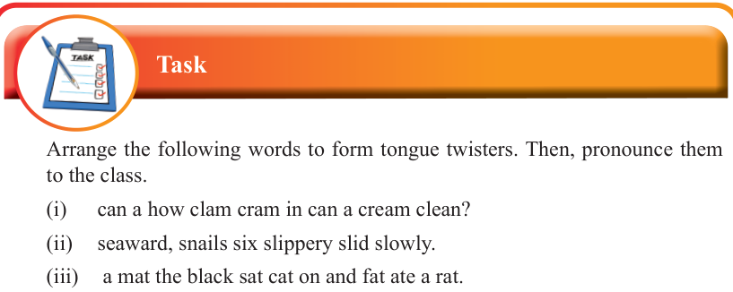

English for Secondary Schools Student’s Book Form One, printed page 16
(i) I really like reading long novels
(ii) If a dog chews shoes, whose shoes does he choose to chew
(iii) Peter Piper picked a peck of pickled peppers
A peck of pickled peppers Peter Piper picked
If Peter Piper picked a peck of pickled peppers
Where’s the peck of pickled peppers Peter Piper picked?
(iv) I thought a thought
But the thought I thought wasn’t the thought I thought,
If the thought I thought I thought had been the thought I thought,
I wouldn’t have thought so much.
Questions
1. Which tongue twister was easy or difficult to pronounce? Why?
2. What is the meaning of the following words: peck, picked, peppers, doctor, doctoring and thought?

Task symbol: a blue clipboard with a pen and four checked boxes.

Task
Arrange the following words to form tongue twisters. Then, pronounce them to the class.
(i) can a how clam cram in can a cream clean?
(ii) seaward, snails six slippery slid slowly.
(iii) a mat the black sat cat on and fat ate a rat.
(iv) thinkers thick, thoughts thin three thought thoughtful